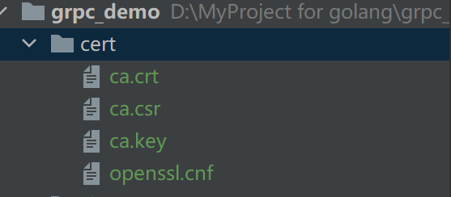
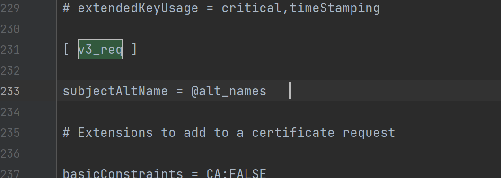
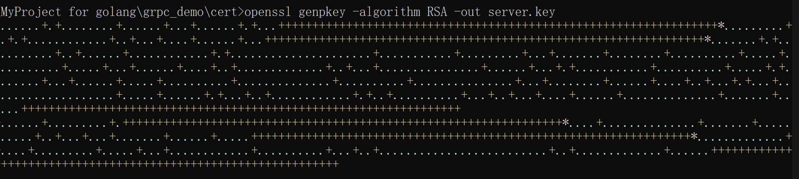

安全认证
客户端和服务端之间调用，我们可以通过加入证书的方式，实现调用的安全性
TLS（Transport Layer Security，安全传输层)，TLS 是建立在传输层 TCP 协议之上的协议，服务于应用层，它的前身是SSL（Secure Socket Layer，安全套接字层），它实现了将应用层的报文进行加密后再交由 TCP 进行传输的功能。
TLS 协议主要解决如下三个网络安全问题。
- 保密(message privacy)，保密通过加密 encryption 实现，所有信息都加密传输，第三方无法嗅探；
- 完整性(message integrity)，通过 MAC 校验机制，一旦被篡改，通信双方会立刻发现；
- 认证(mutual authentication)，双方认证,双方都可以配备证书，防止身份被冒充；
生成自签证书
生产环境可以购买证书或者使用一些平台发放的免费证书
- 安装 openssl
Win 网站下载：http://slproweb.com/products/Win32OpenSSL.html - 生成私钥文件
## 需要输入密码123456
openssl genrsa -des3 -out ca.key 2048
- 创建证书（公钥）请求
openssl req -new -key ca.key -out ca.csr
- 生成 ca.crt
openssl x509 -req -days 365 -in ca.csr -signkey ca.key -out ca.crt
从之前下载的路径中（有时候在 C 盘）找到 openssl.cnf 文件，移到目录该下：

- 找到该文件的 copy_extensions = copy，去掉注释

- 找到 req_extensions = v3_req，去掉注释

- 找到
[ v3_req ]，添加subjectAltName = @alt_names

- 添加新的标签 [ alt_names ] , 和标签字段
[ alt_names ]
DNS.1 = *.mszlu.com

- 生成证书私钥server.key
openssl genpkey -algorithm RSA -out server.key

- 通过私钥server.key生成证书请求文件server.csr
openssl x509 -req -CA ca.crt -CAkey ca.key -CAcreateserial -in server.csr -out server.crt -days 365
openssl req -new -nodes -key server.key -out server.csr -days 3650 -config ./openssl.cnf -extensions v3_req
- 生成SAN证书
openssl x509 -req -days 365 -in server.csr -out server.pem \ -CA ca.crt -CAkey ca.key -CAcreateserial \ -extfile ./openssl.cnf -extensions v3_req
openssl x509 -req -days 365 -in server.csr -out server.pem -CA ca.crt -CAkey ca.key -CAcreateserial -extfile ./openssl.cnf -extensions v3_req
key： 服务器上的私钥文件，用于对发送给客户端数据的加密，以及对从客户端接收到数据的解密。
- csr： 证书签名请求文件，用于提交给证书颁发机构（CA）对证书签名。
- crt： 由证书颁发机构（CA）签名后的证书，或者是开发者自签名的证书，包含证书持有人的信息，持有人的公钥，以及签署者的签名等信息。
- pem： 是基于Base64编码的证书格式，扩展名包括PEM、CRT和CER。
什么是 SAN？
SAN（Subject Alternative Name）是 SSL 标准 x509 中定义的一个扩展。使用了 SAN 字段的 SSL 证书，可以扩展此证书支持的域名，使得一个证书可以支持多个不同域名的解析。
参考链接：https://www.csdn.net/tags/MtTaAgxsNjI4NjI4LWJsb2cO0O0O.html
服务端应用证书
将server.key和server.pem copy到程序中
func main() {
//添加证书
file, err2 := credentials.NewServerTLSFromFile("keys/mszlu.pem", "keys/mszlu.key")
if err2 != nil {
log.Fatal("证书生成错误",err2)
}
rpcServer := grpc.NewServer(grpc.Creds(file))
service.RegisterProdServiceServer(rpcServer,service.ProductService)
listener ,err := net.Listen("tcp",":8002")
if err != nil {
log.Fatal("启动监听出错",err)
}
err = rpcServer.Serve(listener)
if err != nil {
log.Fatal("启动服务出错",err)
}
fmt.Println("启动grpc服务端成功")
}
客户端认证
公钥 copy 到客户端
func main() {
file, err2 := credentials.NewClientTLSFromFile("client/keys/mszlu.pem", "*.mszlu.com")
if err2 != nil {
log.Fatal("证书错误",err2)
}
conn, err := grpc.Dial(":8002", grpc.WithTransportCredentials(file))
if err != nil {
log.Fatal("服务端出错，连接不上",err)
}
defer conn.Close()
prodClient := service.NewProdServiceClient(conn)
request := &service.ProductRequest{
ProdId: 123,
}
stockResponse, err := prodClient.GetProductStock(context.Background(), request)
if err != nil {
log.Fatal("查询库存出错",err)
}
fmt.Println("查询成功",stockResponse.ProdStock)
}
上述认证方式为单向认证：
中间人攻击
双向认证
上面的server.pem和server.key 是服务端的 公钥和私钥。
如果双向认证，客户端也需要生成对应的公钥和私钥。
私钥：
openssl genpkey -algorithm RSA -out client.key
证书:
openssl req -new -nodes -key client.key -out client.csr -days 3650 -config ./openssl.cnf -extensions v3_req
SAN证书：
openssl x509 -req -days 365 -in client.csr -out client.pem -CA ca.crt -CAkey ca.key -CAcreateserial -extfile ./openssl.cnf -extensions v3_req
服务端：
func main() {
//添加证书
//file, err2 := credentials.NewServerTLSFromFile("keys/mszlu.pem", "keys/mszlu.key")
//if err2 != nil {
// log.Fatal("证书生成错误",err2)
//}
// 证书认证-双向认证
// 从证书相关文件中读取和解析信息，得到证书公钥、密钥对
cert, err := tls.LoadX509KeyPair("keys/mszlu.pem", "keys/mszlu.key")
if err != nil {
log.Fatal("证书读取错误",err)
}
// 创建一个新的、空的 CertPool
certPool := x509.NewCertPool()
ca, err := ioutil.ReadFile("keys/ca.crt")
if err != nil {
log.Fatal("ca证书读取错误",err)
}
// 尝试解析所传入的 PEM 编码的证书。如果解析成功会将其加到 CertPool 中，便于后面的使用
certPool.AppendCertsFromPEM(ca)
// 构建基于 TLS 的 TransportCredentials 选项
creds := credentials.NewTLS(&tls.Config{
// 设置证书链，允许包含一个或多个
Certificates: []tls.Certificate{cert},
// 要求必须校验客户端的证书。可以根据实际情况选用以下参数
ClientAuth: tls.RequireAndVerifyClientCert,
// 设置根证书的集合，校验方式使用 ClientAuth 中设定的模式
ClientCAs: certPool,
})
rpcServer := grpc.NewServer(grpc.Creds(creds))
service.RegisterProdServiceServer(rpcServer,service.ProductService)
listener ,err := net.Listen("tcp",":8002")
if err != nil {
log.Fatal("启动监听出错",err)
}
err = rpcServer.Serve(listener)
if err != nil {
log.Fatal("启动服务出错",err)
}
fmt.Println("启动grpc服务端成功")
}
客户端：
func main() {
//file, err2 := credentials.NewClientTLSFromFile("client/keys/mszlu.pem", "*.mszlu.com")
//if err2 != nil {
// log.Fatal("证书错误",err2)
//}
// 证书认证-双向认证
// 从证书相关文件中读取和解析信息，得到证书公钥、密钥对
cert, _ := tls.LoadX509KeyPair("client/keys/test.pem", "client/keys/test.key")
// 创建一个新的、空的 CertPool
certPool := x509.NewCertPool()
ca, _ := ioutil.ReadFile("client/keys/ca.crt")
// 尝试解析所传入的 PEM 编码的证书。如果解析成功会将其加到 CertPool 中，便于后面的使用
certPool.AppendCertsFromPEM(ca)
// 构建基于 TLS 的 TransportCredentials 选项
creds := credentials.NewTLS(&tls.Config{
// 设置证书链，允许包含一个或多个
Certificates: []tls.Certificate{cert},
// 要求必须校验客户端的证书。可以根据实际情况选用以下参数
ServerName: "*.mszlu.com",
RootCAs: certPool,
})
conn, err := grpc.Dial(":8002", grpc.WithTransportCredentials(creds))
if err != nil {
log.Fatal("服务端出错，连接不上",err)
}
defer conn.Close()
prodClient := service.NewProdServiceClient(conn)
request := &service.ProductRequest{
ProdId: 123,
}
stockResponse, err := prodClient.GetProductStock(context.Background(), request)
if err != nil {
log.Fatal("查询库存出错",err)
}
fmt.Println("查询成功",stockResponse.ProdStock)
}
Token认证
服务端添加用户名密码的校验
func main() {
var authInterceptor grpc.UnaryServerInterceptor
authInterceptor = func(
ctx context.Context,
req interface{},
info *grpc.UnaryServerInfo,
handler grpc.UnaryHandler,
) (resp interface{}, err error) {
//拦截普通方法请求，验证 Token
err = Auth(ctx)
if err != nil {
return
}
// 继续处理请求
return handler(ctx, req)
}
server := grpc.NewServer(grpc.UnaryInterceptor(authInterceptor))
service.RegisterProdServiceServer(server,service.ProductService)
listener, err := net.Listen("tcp", ":8002")
if err != nil {
log.Fatal("服务监听端口失败", err)
}
err = server.Serve(listener)
if err != nil {
log.Fatal("服务、启动失败", err)
}
fmt.Println("启动成功")
}
func Auth(ctx context.Context) error {
md, ok := metadata.FromIncomingContext(ctx)
if !ok {
return fmt.Errorf("missing credentials")
}
var user string
var password string
if val, ok := md["user"]; ok {
user = val[0]
}
if val, ok := md["password"]; ok {
password = val[0]
}
if user != "admin" || password != "admin" {
return status.Errorf(codes.Unauthenticated, "token不合法")
}
return nil
}
客户端实现
客户端需要实现 PerRPCCredentials 接口。
type PerRPCCredentials interface {
// GetRequestMetadata gets the current request metadata, refreshing
// tokens if required. This should be called by the transport layer on
// each request, and the data should be populated in headers or other
// context. If a status code is returned, it will be used as the status
// for the RPC. uri is the URI of the entry point for the request.
// When supported by the underlying implementation, ctx can be used for
// timeout and cancellation. Additionally, RequestInfo data will be
// available via ctx to this call.
// TODO(zhaoq): Define the set of the qualified keys instead of leaving
// it as an arbitrary string.
GetRequestMetadata(ctx context.Context, uri ...string) (map[string]string, error)
// RequireTransportSecurity indicates whether the credentials requires
// transport security.
RequireTransportSecurity() bool
}
GetRequestMetadata 方法返回认证需要的必要信息，RequireTransportSecurity 方法表示是否启用安全链接，在生产环境中，一般都是启用的，但为了测试方便，暂时这里不启用了。
实现接口：
type Authentication struct {
User string
Password string
}
func (a *Authentication) GetRequestMetadata(context.Context, ...string) (
map[string]string, error,
) {
return map[string]string{"user": a.User, "password": a.Password}, nil
}
func (a *Authentication) RequireTransportSecurity() bool {
return false
}
应用：
user := &auth.Authentication{
User: "admin",
Password: "admin",
}
conn, err := grpc.Dial(":8002", grpc.WithTransportCredentials(insecure.NewCredentials()),grpc.WithPerRPCCredentials(user))
更新: 2022-07-07 16:52:48
原文: https://www.yuque.com/xiaoshan_wgo/codingnotes/yolhce